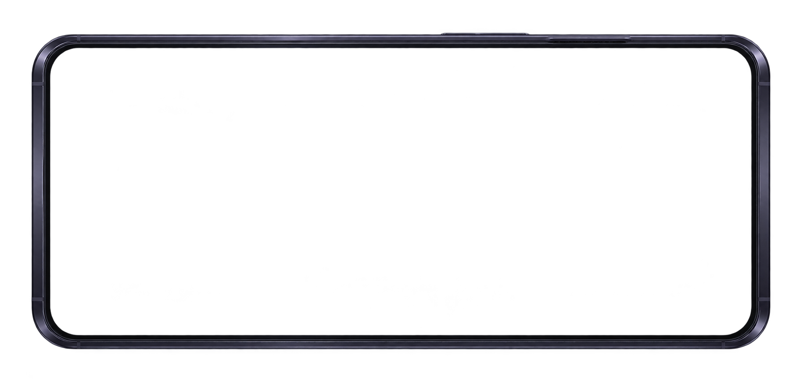

以前の比較案
③＋寄り
内窓が画面いっぱいになるまで寄る。
枠は薄めず、画面の外へ抜ける。
携帯端末 / 演出の比較試作
採用方針は④「枠抜け全画面」・通常速度。右下の「戻る」をホームへ組み込んだ試作です。既存3案も比較用に残しています。Unity・ゲーム本編には接続しません。
④・通常速度を初期値にしています。速さは「設定」でも変更・保存できます。ホーム右下の「戻る」かEscで閉じます。小さく感じる場合は「大きく見る」へ。画面外の再生・比較ボタンは確認用です。入口・戻るキーは実寸44px以上。極小表示では画面外の操作を使ってください。
内窓が画面いっぱいになるまで寄る。
枠は薄めず、画面の外へ抜ける。
探索のカメラは固定。
枠だけを薄くしてホームへつなぐ。
下から現れて、傾きを戻しながら寄る。
SDに取り出す動作は付けない。
浮き上がり → 線から点灯 → 項目を順に表示。
探索も少し寄り、閉じるときは短く畳む。
探索は原作者のスクリーンショットによる静止画です。背景クリックと←／→／A／Dは入力の切替テストだけで、SDは動きません。端末を開くと移動入力・目的地を消し、閉じた後も押していたキーを離すまで再開しません。
画像とホームは先に読み込みます。「準備中」は実際の読み込み状態です。イベント中は開けません。戦闘の詳細な許可タイミングは今回確定しません。

